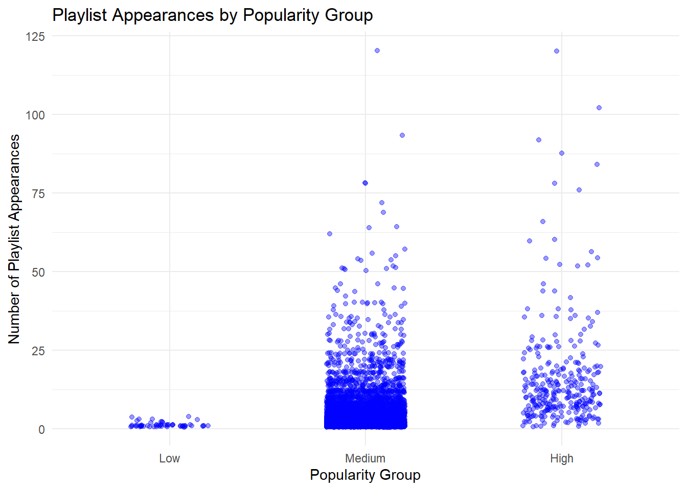
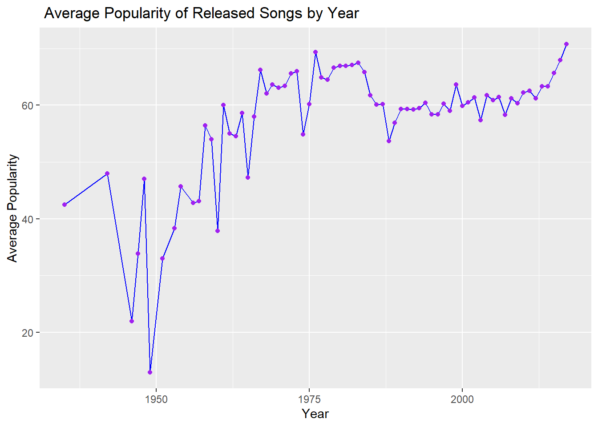
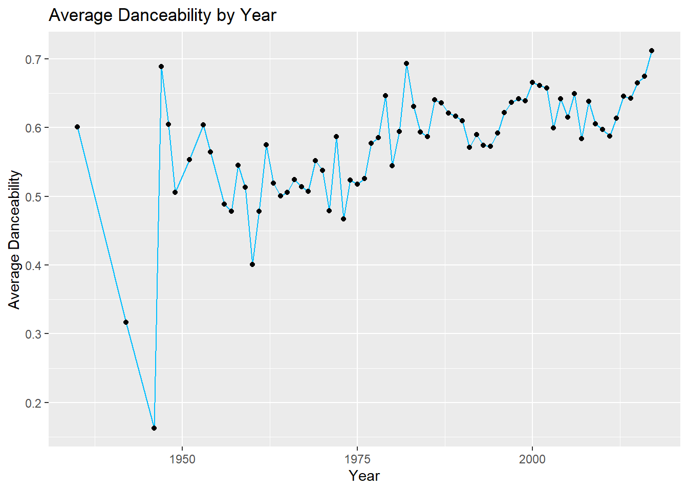
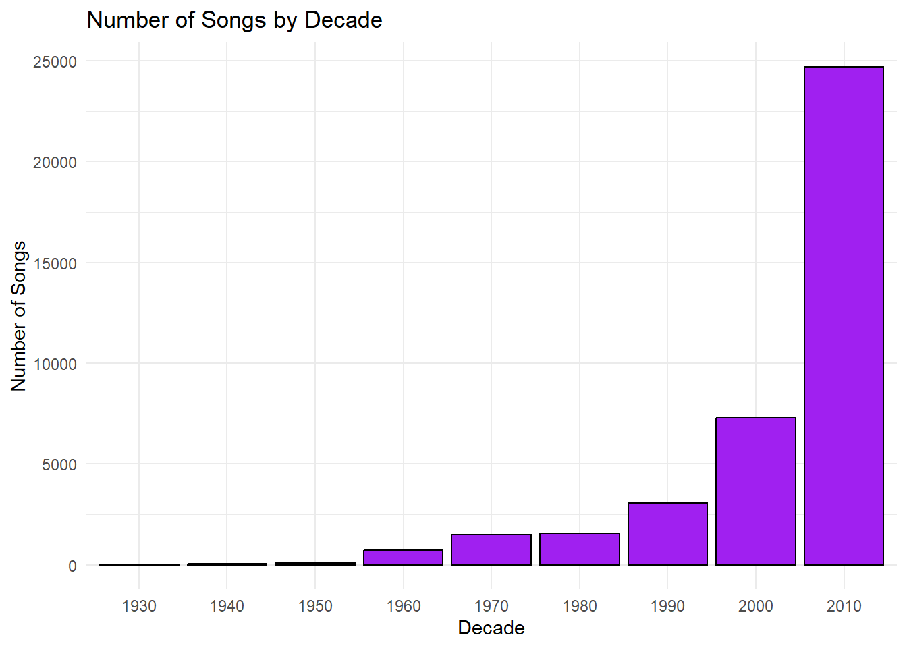
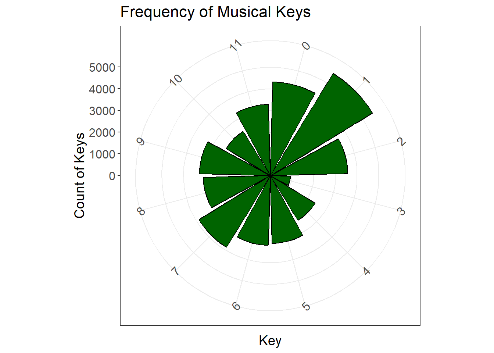
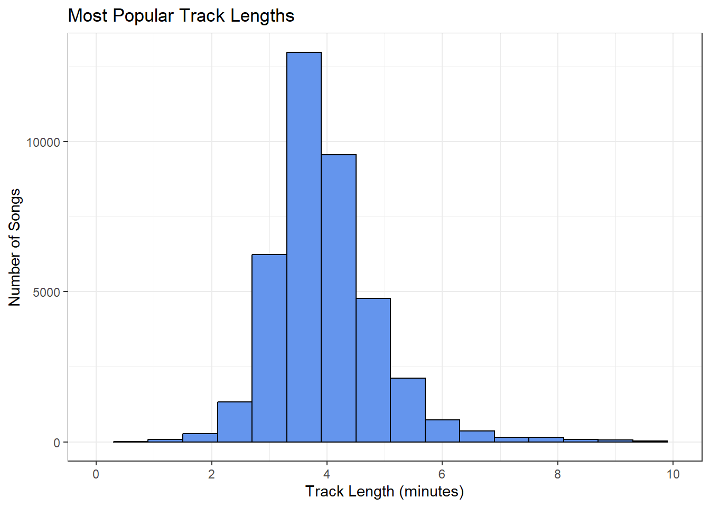

Echoes of the Boulevard is a collection of 12 songs that expresses the emotional journey of a person going thorugh the motions of life as waves of ups and down. It bridges the nostalgic notes of Coldplay with the rebellious attitudes of Green Day. It’s your go to playlist for when you are staring out the window thinking about life, or for late night walks on a boulevard. In this playlist, you will find ballads of longing, sing-along anthems, powerful chords and melodic piano notes… Most importantly, you will find that you identify with the songs on a personal level.
Design Principles
Data Driven Discovery
Using a statistics-based approach, we explored trends in popularity, danceability, energy, valence, track length, and more. By leveraging summary statistics, correlations, and visualizations, we identified key patterns that guided the creation of our desired playlist. The result is a carefully curated selection of tracks that authentically capture the vibe we aimed to achieve.
Heuristic-Based Selection
By employing a heuristic-based approach, the selection of songs for the playlist became more precise and intentional. The heuristics used include several key factors: songs that frequently co-occur in playlists alongside anchor tracks, tracks with similar key and tempo, selections from the same artists, songs with acousticness and danceability values within a defined range, and finally, tracks with a comparable valence (emotional tone). By integrating multiple heuristics, this approach effectively curates a playlist where musical and emotional cohesion is maintained, creating a multi-faceted filtering system that enhances meaningful discovery.
Sonic Cohesion
By prioritizing sonic cohesion, the playlist achieves a well-curated feel. Tracks are ordered based on valence (mood) and energy, ensuring a consistent emotional and rhythmic experience throughout. This approach maintains uniformity in both mood and tempo, enhancing the overall listening journey. Additionally, the visualization of the playlist serves as a validation of its progression, effectively illustrating the evolution of energy, danceability, and emotional tone.
Data Import and Cleaning
For this project, we will examine the key factors that influence a song’s popularity in playlists. Our analysis will utilize the Spotify Million Playlist Dataset, a comprehensive collection of playlists and their associated tracks. Additionally, we will integrate a dataset containing Spotify songs and their audio features to enhance our insights. The table below presents the results of the data import and cleaning process, laying the groundwork for a thorough exploration of song popularity dynamics.
Code
ensure_package <-function(pkg) {if (!requireNamespace(pkg, quietly =TRUE)) {install.packages(pkg) }library(pkg, character.only =TRUE)}# Ensure the necessary packages are installed and loadedensure_package("dplyr")ensure_package("stringr")ensure_package("tidyr")ensure_package("httr2")ensure_package("rvest")ensure_package("datasets")ensure_package("purrr")ensure_package("DT")ensure_package("jsonlite")ensure_package("httr")ensure_package("knitr")#Here we will load the song data from a CSV file (posted by Github User gabminamendez) load_songs <-function() {# Define file and directory paths directory <-"data/mp03" file_url <-"https://raw.githubusercontent.com/gabminamedez/spotify-data/refs/heads/master/data.csv" file_path <-file.path(directory, "data.csv")# Create the directory if it doesn't existif (!dir.exists(directory)) {dir.create(directory, recursive =TRUE) }# Download the file if it doesn't already existif (!file.exists(file_path)) {download.file(file_url, file_path)message("File downloaded: ", file_path) } else {message("File already exists: ", file_path) }# Read the CSV file into a data frame song_data <-read.csv(file_path, stringsAsFactors =FALSE)# Process the artists column clean_artist_string <-function(x){str_replace_all(x, "\\['", "") |>str_replace_all("'\\]", "") |>str_replace_all(" '", "") }# Process and return the data processed_data <- song_data |>separate_longer_delim(artists, ",") |>mutate(artist =clean_artist_string(artists)) |>select(-artists)return(processed_data)}# Now actually call the function and save the resultsong_data <-load_songs()# View the first few rows to confirm it worked# head(song_data)# names(song_data)# # Next, we will load the playlist data from a JSON file (posted by Github User DevinOgrady)# Define the function to load the playlist data from the repository, store them locally, and return a tidy data frame to read them into R in a standardized format.load_playlist <-function() { p_directory <-"data/mp03/playlists" p_url <-"https://raw.githubusercontent.com/DevinOgrady/spotify_million_playlist_dataset/master/data1/" j_file_name <-"mpd.slice.0-999.json" file_path_1 <-file.path(p_directory, j_file_name) file_url_1 <-paste0(p_url, j_file_name)if (!dir.exists(p_directory)) {dir.create(p_directory, recursive =TRUE) }if (!file.exists(file_path_1)) {download.file(file_url_1, destfile = file_path_1, method ="auto") } playlist_data <-fromJSON(file_path_1, simplifyVector =FALSE) if (!"playlists"%in%names(playlist_data)) return(NULL) playlist_tracks <-map_dfr(playlist_data$playlists, function(pl) {if (!is.list(pl)) return(NULL)if (!("tracks"%in%names(pl))) return(NULL)if (!is.list(pl$tracks) ||length(pl$tracks) ==0) return(NULL) tidy_data <-tryCatch(bind_rows(pl$tracks),error =function(e) NULL )if (is.null(tidy_data) ||nrow(tidy_data) ==0) return(NULL) tidy_data |>mutate(playlist_name = pl$name,playlist_id = pl$pid,playlist_followers = pl$num_followers,playlist_position =row_number() ) |>select( playlist_name, playlist_id, playlist_followers, playlist_position, track_name, track_uri, artist_name, artist_uri, album_name, album_uri, duration_ms ) |>rename(track_id = track_uri,artist_id = artist_uri,album_id = album_uri,duration = duration_ms ) })return(playlist_tracks)}# Load playlists dataplaylists_data <-load_playlist()# glimpse(playlists_data)# head(playlists_data)# View(playlists_data)#‘Rectangle’ the Playlist Data#Convert the playlist data into the rectangle format, which is a tidy data frame with one row per track in a playlist.strip_spotify_prefix <-function(x){library(stringr)str_extract(x, ".*:.*:(.*)", group=1)}playlists_data <- playlists_data |>mutate(track_id =sapply(track_id, strip_spotify_prefix),artist_id =sapply(artist_id, strip_spotify_prefix),album_id =sapply(album_id, strip_spotify_prefix) )# View(playlists_data)#create a kabble of the first 10 rows of the playlist datakable(playlists_data[1:10,])
playlist_name
playlist_id
playlist_followers
playlist_position
track_name
track_id
artist_name
artist_id
album_name
album_id
duration
Throwbacks
0
1
1
Lose Control (feat. Ciara & Fat Man Scoop)
0UaMYEvWZi0ZqiDOoHU3YI
Missy Elliott
2wIVse2owClT7go1WT98tk
The Cookbook
6vV5UrXcfyQD1wu4Qo2I9K
226863
Throwbacks
0
1
2
Toxic
6I9VzXrHxO9rA9A5euc8Ak
Britney Spears
26dSoYclwsYLMAKD3tpOr4
In The Zone
0z7pVBGOD7HCIB7S8eLkLI
198800
Throwbacks
0
1
3
Crazy In Love
0WqIKmW4BTrj3eJFmnCKMv
Beyoncé
6vWDO969PvNqNYHIOW5v0m
Dangerously In Love (Alben für die Ewigkeit)
25hVFAxTlDvXbx2X2QkUkE
235933
Throwbacks
0
1
4
Rock Your Body
1AWQoqb9bSvzTjaLralEkT
Justin Timberlake
31TPClRtHm23RisEBtV3X7
Justified
6QPkyl04rXwTGlGlcYaRoW
267266
Throwbacks
0
1
5
It Wasn’t Me
1lzr43nnXAijIGYnCT8M8H
Shaggy
5EvFsr3kj42KNv97ZEnqij
Hot Shot
6NmFmPX56pcLBOFMhIiKvF
227600
Throwbacks
0
1
6
Yeah!
0XUfyU2QviPAs6bxSpXYG4
Usher
23zg3TcAtWQy7J6upgbUnj
Confessions
0vO0b1AvY49CPQyVisJLj0
250373
Throwbacks
0
1
7
My Boo
68vgtRHr7iZHpzGpon6Jlo
Usher
23zg3TcAtWQy7J6upgbUnj
Confessions
1RM6MGv6bcl6NrAG8PGoZk
223440
Throwbacks
0
1
8
Buttons
3BxWKCI06eQ5Od8TY2JBeA
The Pussycat Dolls
6wPhSqRtPu1UhRCDX5yaDJ
PCD
5x8e8UcCeOgrOzSnDGuPye
225560
Throwbacks
0
1
9
Say My Name
7H6ev70Weq6DdpZyyTmUXk
Destiny’s Child
1Y8cdNmUJH7yBTd9yOvr5i
The Writing’s On The Wall
283NWqNsCA9GwVHrJk59CG
271333
Throwbacks
0
1
10
Hey Ya! - Radio Mix / Club Mix
2PpruBYCo4H7WOBJ7Q2EwM
OutKast
1G9G7WwrXka3Z1r7aIDjI7
Speakerboxxx/The Love Below
1UsmQ3bpJTyK6ygoOOjG1r
235213
Initial Exploration
With a imported and cleaned dataset, we can now begin to explore the data.
How many distinct tracks and artists are represented in the playlist data?
There are 9,745 distinct artists and 34,443 distinct tracks in the playlist data.The following table shows the distinct artists in the playlist.
Code
library(dplyr)library(knitr)library(kableExtra)#Count the number of distinct artists and tracksdistinct_artists <- playlists_data |>distinct(artist_id) |>summarise("Number of Artists"=n())#print(distinct_artists)#create a kable of distinct artistskable(distinct_artists)
Number of Artists
9754
The following table shows the distinct tracks in the playlist data set.
Code
#Count the number of distinct tracksdistinct_tracks <- playlists_data |>distinct(track_id) |>summarise("Number of Tracks"=n())#print(distinct_tracks)#create a kable of distinct trackskable(distinct_tracks)
Number of Tracks
34443
What are the 5 most popular tracks in the playlist data?
The most popular track is Closer which made 75 appearances in the playlist data.
The following table shows the 5 most popular tracks in the playlist data.
Code
# Find the most popular tracksmost_popular_tracks <- playlists_data |>group_by(track_name) |>summarise(`Number of Appearances`=n()) |>arrange(desc(`Number of Appearances`)) |>slice(1:5) |>rename("Name of Track"= track_name) #print(most_popular_tracks)#View(most_popular_tracks)# Create a kable of the most popular trackskable(most_popular_tracks)
Name of Track
Number of Appearances
Closer
75
One Dance
55
HUMBLE.
52
Ride
52
Broccoli (feat. Lil Yachty)
50
What is the most popular track in the playlist data that does not have a corresponding entry in the song characteristics data?
The most popular track that does not have a corresponding entry in the song characteristics data is One Dance by Drake. It appears 55 times in the playlist data and is shockingly not in the song characteristics data set for it’s danceability.
Code
#join data frames by track id columnsong_data <- song_data |>rename("track_id"= id)#Find the most popular track that has no entry in song datano_match_tracks <- playlists_data |>anti_join(song_data, by ="track_id") most_pop_nochar <- ( no_match_tracks |>count(`Name of Track`= track_name, `Artist`= artist_name, sort =TRUE) |>slice_max(n, n =1) |>rename(`Number of Appearances`= n))#View(most_pop_nochar)# Create a kable of the most popular track without characteristicskable(most_pop_nochar)
Name of Track
Artist
Number of Appearances
One Dance
Drake
55
4. According to the song characteristics data, what is the most “danceable” track? How often does it appear in a playlist?
The most danceable track is Tone-Loc's Funky Cold Medina. It appears one time in the playlist titled ***VACATION*** and has a danceability score that is closest to 1.
Code
# use left join to combine the song data with the playlist datajoin_data <- song_data |>left_join(playlists_data, by ="track_id")# Find the most danceable trackmost_danceable_track <- join_data |>select(track_name, artist_name, danceability, playlist_name) |>arrange(desc(danceability)) |>rename("Name of Track"= track_name, "Artist"= artist_name, "Danceability"= danceability, "Playlist Name"= playlist_name) |>slice(1)#View(most_danceable_track)# Create a kable table to display the most danceable trackkable(most_danceable_track)
Name of Track
Artist
Danceability
Playlist Name
Funky Cold Medina
Tone-Loc
0.988
VACATION
Which playlist has the longest average track length?
The playlist with the longest average track length is the Classical playlist. It’s average track length is approximately 411148.7 milliseconds or 7 minutes.
Code
# Find the playlist with the longest average track length by grouping by playlist name # and calculating the average track length (average of the duration column).# Then, calculate the average length in minutes and sort the data frame in descending order.#names(playlists_data)longest_playlist <- playlists_data |>group_by(playlist_name) |>summarise(avg_length =mean(duration)) |>mutate(avg_length_min =round(avg_length/60000, 0)) |>arrange(desc(avg_length)) |>rename("Playlist Name"= playlist_name, "Average Track Length (ms)"= avg_length, "Average Track Length (min)"= avg_length_min) |>slice(1)#View(longest_playlist)# Create a kable Extra table to display the playlist with the longest average track lengthkable(longest_playlist)
Playlist Name
Average Track Length (ms)
Average Track Length (min)
classical
411148.7
7
What is the most popular playlist on Spotify?
The most popular playlist on Spotify is Tangled with 1038 followers.
Code
#Find the most popular playlist by grouping by playlist id and name and number of followersmost_popular_playlist <- playlists_data |>distinct(playlist_id, playlist_name, playlist_followers) |>slice_max(playlist_followers) |>rename("Playlist ID"= playlist_id,"Playlist Name"= playlist_name, "Number of Followers"= playlist_followers) #View(most_popular_playlist)# Create a kable table to display the most popular playlistkable(most_popular_playlist)
Playlist ID
Playlist Name
Number of Followers
765
Tangled
1038
Identifying the Ultimate Playlist
Next, we will conduct a more in-depth analysis of the most popular songs in the data set using INNER_JOIN to combine the song data with the playlist data set. We will use ggplot2 to visualize the data.
Is the popularity column correlated with the number of playlist appearances? If so, to what degree?
The following plot shows the correlation between the popularity and the number of playlist appearances. The correlation is positive, indicating that as the popularity increases, the number of playlist appearances also increases. The thresholds are set at 0-25 for Low and 25-75 for Medium and 75-100 for High for mean popularity.
Code
#use inner join to combine the song data with the playlist datainner_join_data <- song_data |>inner_join(playlists_data, by ="track_id")#using the inner join data find the correlation between the popularity and the number of playlist appearancespop_correlation <- inner_join_data |>group_by(track_id, track_name) |>summarise(num_of_playlists =n(),mean_popularity =mean(popularity),.groups ="drop") #create a new column to categorize the popularity into groups (Low, Medium, High)pop_correlation <- pop_correlation |>mutate(popularity_group =cut( mean_popularity,breaks =c(0, 25, 75, 100),labels =c("Low", "Medium", "High"),include.lowest =TRUE ))#View(pop_correlation)# Create a boxplot to display the popularity groups and their average playlist appearanceslibrary(ggplot2)ggplot(pop_correlation, aes(x = popularity_group, y = num_of_playlists)) +geom_jitter(width =0.2, alpha =0.4, color ="blue") +labs(title ="Playlist Appearances by Popularity Group",x ="Popularity Group",y ="Number of Playlist Appearances" ) +theme_minimal()

In what year were the most popular songs released?.
The most popular songs were released in 2017. The highest average popularity of released songs was approximately 70.79.
Code
#Using the inner join data and mean, we will filter the data to find the most popular songs released in a distinct year.pop_year <- inner_join_data |>group_by(year) |>summarise(mean_pop_songs =mean(popularity, na.rm =TRUE)) |>arrange(desc(mean_pop_songs))#head(pop_year)top_ten_pop_year <- pop_year |>slice_head(n=10)#create kable of the most popular songs released in a distinct yearkable(top_ten_pop_year)
year
mean_pop_songs
2017
70.78972
1976
69.37306
2016
67.92846
1983
67.48315
1982
67.05217
1980
66.93662
1981
66.90955
1979
66.62581
1967
66.18493
1973
66.00585
Code
#View(pop_year)#visualize the average popularity of songs by yearpop_year_plot <-ggplot(pop_year, aes(x = year, y = mean_pop_songs)) +geom_line(color ="blue") +geom_point(color ="purple") +labs(title =" Average Popularity of Released Songs by Year",x ="Year",y ="Average Popularity")print(pop_year_plot)

In what year did danceability peak?
The year with the highest average danceability is 2017. The average danceability for that year is 0.71.
Code
# Using the inner join data, we will filter the data to find the year with the highest average danceability.danceability_year <- inner_join_data |>group_by(year) |>summarise(mean_danceability =mean(danceability, na.rm =TRUE)) |>slice_max(mean_danceability, n =1) |>rename("Average Danceability"= mean_danceability)#View(danceability_year)#create a kable of the year with the highest average danceabilitykable(danceability_year)
year
Average Danceability
2017
0.7120776
Code
#data to view all average danceability by yeardanceability_year_all <- inner_join_data |>group_by(year) |>summarise(mean_danceability =mean(danceability, na.rm =TRUE)) |>arrange(desc(mean_danceability)) #visualize the average danceability of songs by year using a line plotdanceability_year_plot <-ggplot(danceability_year_all, aes(x = year, y = mean_danceability)) +geom_line(color ="deepskyblue") +geom_point(color ="black") +labs(title ="Average Danceability by Year",x ="Year",y ="Average Danceability")print(danceability_year_plot)

Which decade is most represented on user playlists?
The decade with the most songs is the 2010s. The number of 2010 songs on most users playlist at that time was 24,713.
Code
#Mutate a column to calculate the decade using integer divisionpop_decade <- inner_join_data |>mutate(decade = (year %/%10) *10) |>group_by(decade) |>summarise(num_songs =n()) |>arrange(desc(num_songs)) |>rename("Number of Songs"= num_songs, "Decade"= decade)#View(pop_decade)# Create a kable Extra table to display the number of songs by decadekable(pop_decade)
Decade
Number of Songs
2010
24713
2000
7291
1990
3069
1980
1573
1970
1501
1960
735
1950
93
1940
38
1930
2
Code
# Create a bar plot to visualize the number of songs by decadepop_decade_plot <-ggplot(pop_decade, aes(x =factor(`Decade`), y =`Number of Songs`)) +geom_bar(stat ="identity", fill ="purple", color ="black") +labs(title ="Number of Songs by Decade",x ="Decade",y ="Number of Songs") +theme_minimal()print(pop_decade_plot)

Plotting the key frequency among songs
The most common key is the 0 and 1 keys. The frequency of those key is more than 1,000.
Code
# Calculate the frequency of each keykey_frequency <- inner_join_data |>group_by(key) |>summarize(count =n()) |>arrange(desc(count))# Create a polar plot...ggplot(key_frequency, aes(x =as.factor(key), y = count)) +geom_bar(stat ="identity", fill ="darkgreen", color ="black") +coord_polar(start =0) +theme_bw() +labs(title ="Frequency of Musical Keys",x ="Key",y ="Count of Keys") +theme(axis.text.x =element_text(angle =45, hjust =1),axis.text =element_text(size =12),axis.title =element_text(size =14),plot.title =element_text(size =16))

What are the most popular track lengths?
The following histogram shows the distribution of track lengths. The most common track length is between 2 and 4 minutes.
Code
#using the inner join data, we will filter the data to find the most popular track lengths (in minutes)inner_join_data<- inner_join_data |>mutate(track_length = duration/60000)#find the mean, median, min, and max track lengthstrack_length_data <- inner_join_data |>summarise(avg_length =mean(track_length, na.rm =TRUE),median_length =median(track_length, na.rm =TRUE),min_length =min(track_length, na.rm =TRUE),max_length =max(track_length, na.rm =TRUE) ) #View(track_length_data)#Create a kable table to display the track length datakable(track_length_data)
avg_length
median_length
min_length
max_length
3.974142
3.833333
0.0034333
37.31222
Code
#Create a histogram to visualize the distribution of track lengthsggplot(inner_join_data, aes(x = track_length)) +geom_histogram(binwidth =0.6, fill ="cornflowerblue", color ="black") +labs(title ="Most Popular Track Lengths",x ="Track Length (minutes)",y ="Number of Songs") +theme_bw() +scale_x_continuous(limits =c(0, 10), # Only min and max go herebreaks =seq(0, 10, 2) # Add ticks every 2 minutes )

Building a Playlist from Anchor Songs
Now that exploring the data is finished we can build the playlist! First, we picked two anchor songs from the playlist data set: Wake Me Up When September Ends by Green Day and Fix You by Coldplay. Then, we found songs that work well in the playlist using heuristics.
Heuristics
What other songs commonly appear on playlists along side this song?
Code
#Using inner join data we will filter the data to find the anchor songs and their characteristics. anchor_songs <- inner_join_data |>filter(track_name %in%c("Wake Me Up When September Ends", "Fix You")) |>distinct(track_id, track_name, artist_name, key, tempo, year, popularity, acousticness, danceability, valence, instrumentalness,energy)#View(anchor_songs)#distinct(inner_join_data, track_name) |> View()#Heuristic 1: Songs that Commonly Appear with the Anchor Song#We'll find songs that appeared in the same playlists as the anchor song(s).anchor_ids <- anchor_songs$track_idco_occurring_tracks <- playlists_data |>filter(track_id %in% anchor_ids) |>select(playlist_id) |>inner_join(playlists_data, by ="playlist_id") |>filter(!track_id %in% anchor_ids) |># exclude the anchor itselfcount(track_name, artist_name, sort =TRUE) |>slice_max(n, n =20)# Rename columns for clarityco_occurring_tracks <- co_occurring_tracks |>rename(`Track Name`= track_name,`Artist Name`= artist_name,`Number of Playlists`= n )#View(co_occurring_tracks)top_ten_co_ocurring <- co_occurring_tracks |>slice_head(n =10)# Create a kable table to display the similar co-occuring trackskable(top_ten_co_ocurring)
Track Name
Artist Name
Number of Playlists
Chasing Cars
Snow Patrol
9
Drops of Jupiter
Train
8
I Write Sins Not Tragedies
Panic! At The Disco
7
Yellow
Coldplay
7
21 Guns
Green Day
6
Mr. Brightside
The Killers
6
She Will Be Loved - Radio Mix
Maroon 5
6
The Scientist
Coldplay
6
Holiday/Boulevard Of Broken Dreams
Green Day
5
How to Save a Life
The Fray
5
What other songs are in the same key and have a similar tempo?
The following table shows the songs that are in the same key and have a similar tempo to the anchor songs. The tempo is between 5 BPM of the anchor songs.
Code
#################Heuristic 2: Same Key + Similar Tempo (±5 BPM)library(purrr)similar_key_tempo <- inner_join_data |>filter( key %in% anchor_songs$key,map_lgl(tempo, ~any(abs(.x - anchor_songs$tempo) <=5)) ) |>distinct(track_id, track_name, artist_name, tempo, key)|>slice_max(tempo, n =15) # Get top 10 similar tracks# Rename columns for claritysimilar_key_tempo <- similar_key_tempo |>rename(`Track Name`= track_name,`Artist Name`= artist_name,`Tempo (BPM)`= tempo,`Key`= key )#View(similar_key_tempo)top_ten_keytemp <- similar_key_tempo |>slice_head(n =10)# Create a kable table to display the similar key tempo trackskable(top_ten_keytemp)
track_id
Track Name
Artist Name
Tempo (BPM)
Key
71tjsDvB4EMJqNG8EMmFnb
Comin’ Home Baby
Mel Tormé
143.121
7
1f2lkuLldqRzvaFjJdjGXX
Santa Claus Is Comin’ to Town
Mariah Carey
143.109
7
4NTWZqvfQTlOMitlVn6tew
The Show Goes On
Lupe Fiasco
143.067
7
10eDxSTjwMBq1ZjZK5b1cK
Millennia
Crown The Empire
143.036
3
2rUwQj4SWaP2anuGDtNpYR
Self-Made
Bryson Tiller
143.001
7
0UDCfleTgwihlnOUxbzokR
Awake
BTS
142.816
3
6NGi23FFKq9tH5NR1NcTw2
Let Her Cry
Hootie & The Blowfish
142.570
7
3403qFGo7u2ptUyJbdEkjI
For the Widows in Paradise, For the Fatherless in Ypsilanti
Sufjan Stevens
142.433
3
4F55RCGuM477OjznpYGhYz
Shortie Like Mine
Bow Wow
142.149
7
7g8OpS827dAYU067lZaR0L
Just a Dream
Carrie Underwood
142.060
7
What other songs were released by the same artists?
Code
#Heuristic 3: Same Artistsame_artist_tracks <- inner_join_data |>filter(artist_name %in% anchor_songs$artist_name) |>distinct(track_id, track_name, artist_name)#View(same_artist_tracks)# Create a kable Extra table to display the same artist trackstop_ten_same <- same_artist_tracks |>slice_head(n =10)kable(top_ten_same)
track_id
track_name
artist_name
31L9yLXSj6LpCFupyMV6CR
Up&Up
Coldplay
5qfZRNjt2TkHEL12r3sDEU
Everglow
Coldplay
4ZcnZVXwLDLWI93SLJER3a
Misery
Green Day
1rkbMXhEjIytsUGbhoR5pn
Life In Technicolor
Coldplay
1qIgyDoc2rwtq8w49jeWL8
Oh Love
Green Day
6f49kbOuQSOsStBpyGvQfA
A Head Full Of Dreams
Coldplay
6FnDerFHdaeCFovZnQ3r14
Last Ride In
Green Day
3KzCJGegAcwsSik1bOgkNu
Words I Might Have Ate
Green Day
6c6W25YoDGjTq3qSPOga5t
Ink
Coldplay
3HWDWyIqWuLsTHECx9DvXF
Birds
Coldplay
What other songs were released in the same year and have similar levels of acousticness and danceability?
We’ll allow a range (±0.1) around the acousticness/danceability of the anchor songs.
Code
# heuristic 4 - # We'll allow a range (±0.1) around the acousticness/danceability of the anchor songs.#find the range of years for the anchor songs#and filter the data to find the similar songsanchor_range <- anchor_songs |>summarise(min_acoustic =min(acousticness) -0.1,max_acoustic =max(acousticness) +0.1,min_dance =min(danceability) -0.1,max_dance =max(danceability) +0.1,year_range =list(unique(year)) # make year_range a list-column )# Pull the scalar values from the 1-row data framemin_acoustic <- anchor_range$min_acousticmax_acoustic <- anchor_range$max_acousticmin_dance <- anchor_range$min_dancemax_dance <- anchor_range$max_danceyear_range <- anchor_range$year_range[[1]] # unlist the year_range safely# Now filter safelysimilar_vibe_tracks <- inner_join_data |>filter( year %in% year_range, acousticness >= min_acoustic, acousticness <= max_acoustic, danceability >= min_dance, danceability <= max_dance ) |>distinct(track_id, track_name, artist_name, year)#View(similar_vibe_tracks)top_ten_vibe <- similar_vibe_tracks |>slice_head(n =10)#create a kable table to display the similar vibe trackskable(top_ten_vibe)
track_id
track_name
artist_name
year
28jOIJzouTp7gqhtx7RbGa
Blame It On Bad Luck
Bayside
2005
4e4vO6bp5nSdP9G79O3qS6
Miss Me Baby
Chris Cagle
2005
2YxoC2dYOotjqt08dEifsc
Chromakey Dreamcoat
Boards of Canada
2005
2itu79WbZhUCHX4jg0fyAd
Never Let This Go
Paramore
2005
53Qpn8LPa0IhFCTiPO0Bbm
I Disappear
The Faint
2004
0L639McB94IkUvIgZKM1E5
Pirates
Bullets And Octane
2004
5fHkJ1a7v0JFPiT9rFQI8U
Te Daré Lo Mejor
Jesús Adrián Romero
2004
6u84UiQ3TRczfYTDVYrz7S
Someone That You’re With
Nickelback
2005
433JymbpWnRMHXzp1oTRP7
Don’t Bother
Shakira
2005
4sjjV02cN3nDOIZPJabEgM
The Time Is Now
John Cena
2005
What other songs were released have similar levels of valence?
Code
#Valence(Mood) or emotional tone of the track# names(anchor_songs)#We will use the valence column to find similar songsvalence_range <- anchor_songs |>summarise(min_valence =min(valence) -0.001,max_valence =max(valence) +0.001)#compare the valence of the anchor songs to the valence of the other songssimilar_valence_tracks <- inner_join_data |>filter( valence >= valence_range$min_valence, valence <= valence_range$max_valence ) |>distinct(track_id, track_name, artist_name, valence)# Rename columns for claritysimilar_valence_tracks <- similar_valence_tracks |>rename(`Track Name`= track_name,`Artist Name`= artist_name,`Valence`= valence )#View(similar_valence_tracks)top_ten_valence <- similar_valence_tracks |>slice_head(n =10)# Create a kable table to display the similar valence trackskable(top_ten_valence)
track_id
Track Name
Artist Name
Valence
3lpa6fzS3rSAbRogEhWxu7
Star Spangled Banner - Live at Woodstock
Jimi Hendrix
0.129
1YBf7Tq9bpcVwvnlP8YbQS
Year Zero
Ghost B.C.
0.137
52WTLETEHs5jwCr7LCq0VW
Queen
Perfume Genius
0.130
5qfZRNjt2TkHEL12r3sDEU
Everglow
Coldplay
0.136
0WCbhE2evMrIwRM0DlMy9k
Mixtape (feat. Young Thug & Lil Yachty)
Chance The Rapper
0.126
5eG8QuQKOBvDeCyoOeMkhT
Alps
Novo Amor
0.135
7hmdJhc4W0idVVoMES7F9F
If I Know Me
George Strait
0.146
4qKDjmz094Bu2wMepNuwVN
Main Title / Once Upon A Dream / Prologue - From “Sleeping Beauty” Soundtrack
Chorus - Sleeping Beauty
0.143
1fckqKAI9ug7U1DgQrrOop
Believe It - feat. Rick Ross
Meek Mill
0.138
0st2C7aLz9xkr7JyshhUHK
Scandal of Grace
Hillsong United
0.138
Creating the Ultimate Playlist
The following playlist is comprised of the offical 12 candidates selected for the playlist before ordering. It was created using all four heurtics above to find songs of similar standing as the chosen anchor songs. Additionally, it’s comprised of 2 songs that I was not familiar with, I Disappear and Chromakey Dreamcoat. This means that the playlist is also pretty diverse in terms of popularity.
Code
#final Playlist Candidate#Now combine all those results and filter down to at least 20 unique songs, making sure at least 8 are not “popular” (say, popularity < 60)anchor_artists <-unique(anchor_songs$artist_name)anchor_ids <-unique(anchor_songs$track_id)all_candidates <-bind_rows( co_occurring_tracks, similar_key_tempo, similar_vibe_tracks, similar_valence_tracks) |>filter(!artist_name %in% anchor_artists) |>distinct(track_id, track_name, artist_name)# Join with popularity infofinal_candidates <- all_candidates |>inner_join(inner_join_data |>select(track_name, artist_name, popularity,valence,energy,danceability), by =c("track_name", "artist_name")) |>distinct() |>mutate(is_popular =ifelse(popularity >=60, "Not Popular", "Popular"))popular_split <- final_candidates |>group_split(is_popular)non_popular <- popular_split[[which(levels(as.factor(final_candidates$is_popular)) =="Not Popular")]] |>slice_head(n =4)popular <- popular_split[[which(levels(as.factor(final_candidates$is_popular)) =="Popular")]] |>slice_head(n =6)final_playlist <-bind_rows(non_popular, popular)# Select relevant columns from anchor_songsanchor_clean <- anchor_songs |>select(track_id, track_name, artist_name, popularity, valence, energy, danceability)# Combine with the rest of the playlistfinal_playlist <-bind_rows(final_playlist, anchor_clean) |>distinct(track_id, .keep_all =TRUE) # Avoid duplicateskable(final_playlist)
track_id
track_name
artist_name
popularity
valence
energy
danceability
is_popular
2JdhRRTl3ee6pQQupVQqyb
How Great Is Our God
Chris Tomlin
63
0.0765
0.573
0.318
Not Popular
7oK9VyNzrYvRFo7nQEYkWN
Mr. Brightside
The Killers
78
0.2320
0.924
0.356
Not Popular
5oQcOu1omDykbIPSdSQQNJ
1985
Bowling For Soup
70
0.9030
0.887
0.606
Not Popular
7lRlq939cDG4SzWOF4VAnd
I’m Not Okay (I Promise)
My Chemical Romance
73
0.2550
0.940
0.210
Not Popular
28jOIJzouTp7gqhtx7RbGa
Blame It On Bad Luck
Bayside
44
0.4140
0.692
0.323
Popular
4e4vO6bp5nSdP9G79O3qS6
Miss Me Baby
Chris Cagle
43
0.3570
0.569
0.526
Popular
2YxoC2dYOotjqt08dEifsc
Chromakey Dreamcoat
Boards of Canada
50
0.7660
0.825
0.643
Popular
2itu79WbZhUCHX4jg0fyAd
Never Let This Go
Paramore
49
0.5290
0.880
0.519
Popular
53Qpn8LPa0IhFCTiPO0Bbm
I Disappear
The Faint
45
0.6770
0.860
0.627
Popular
0L639McB94IkUvIgZKM1E5
Pirates
Bullets And Octane
51
0.7580
0.907
0.521
Popular
3ZffCQKLFLUvYM59XKLbVm
Wake Me Up When September Ends
Green Day
76
0.1460
0.814
0.546
NA
7LVHVU3tWfcxj5aiPFEW4Q
Fix You
Coldplay
81
0.1240
0.417
0.209
NA
The Final Playlist Visualized
With our final 12 candidates for the ultimate playlist, we can now analyze the metrics that define Echoes of the Boulevard as the ultimate selection. In the following visualization, the playlist ranks higher on the feature value scale compared to danceability and valence. This aligns with the fact that the anchor songs are less danceable and carry a more melancholic, emotionally somber tone. Additionally, this validates that the playlist consists of tracks with similar characteristics to the anchor songs, ensuring a cohesive and consistent listening experience.
Code
# Order by sonic flowordered_playlist <- final_playlist |>arrange(valence + energy)# View final playlist#View(ordered_playlist)# Visualize Playlistlibrary(ggplot2)ordered_playlist <- ordered_playlist |>mutate(energy =as.numeric(energy),valence =as.numeric(valence),danceability =as.numeric(danceability) )# Ensure the 'ordered_playlist' has all the necessary columnsordered_playlist <- ordered_playlist |>mutate(order =row_number())# Create the plot# Optional: Ensure track_name is a factor to maintain orderordered_playlist <- ordered_playlist |>mutate(track_name =factor(track_name, levels = track_name))# Now build the plotggplot(ordered_playlist, aes(x = track_name)) +geom_line(aes(y = energy), color ="orange", size =1.2, group =1) +geom_line(aes(y = danceability), color ="steelblue", size =1.2, group =1) +geom_line(aes(y = valence), color ="purple", size =1.2, group =1) +labs(title ="Ultimate Playlist: Echoes of The Boulevard",subtitle ="Energy (orange), Danceability (blue), Valence (purple)",x ="Track Name",y ="Feature Value (0–1 scale)" ) +theme_minimal() +theme(axis.text.x =element_text(angle =45, hjust =1, size =9),plot.title =element_text(face ="bold") )